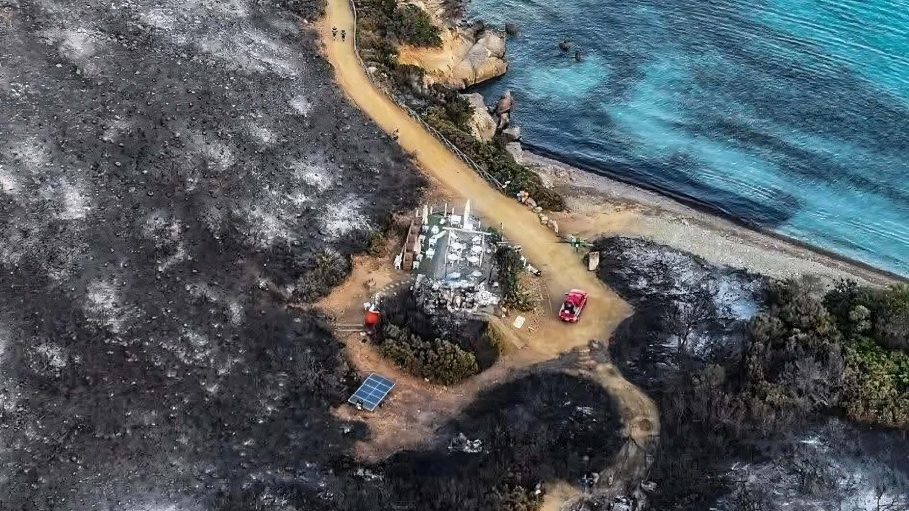

Wildfire
Quando il paradiso prende fuoco
Una crisi globale che ha un nome e un volto: Punta Molentis. Un’analisi approfondita attraverso dati satellitari, testimonianze e scenari futuri.
Una catastrofe annunciata
In tre ore, il 27 luglio 2025, una spiaggia iconica della Sardegna diventa il simbolo di una crisi sistemica.
Un focolaio si sviluppa nella macchia mediterranea che circonda l’accesso alla spiaggia. Cause in fase di indagine. Il maestrale soffia già a 60–70 km/h.
In meno di 30 minuti il fuoco raggiunge le spiagge di Riu Trottu e Punta Molentis. La strada d’accesso è bloccata. Centinaia di persone rimangono isolate sul mare.
Tra le persone bloccate: 12 bambini, una donna al sesto mese di gravidanza, un bambino con asma bronchiale. Nessuna via di fuga terrestre.
La Guardia Costiera mobilita tutte le imbarcazioni. L’elicottero “Nemo” coordina i soccorsi. Sono venti cittadini — bagnanti, sub, diportisti — a fare la differenza, autorganizzandosi per trasportare i più vulnerabili.
Vigili del Fuoco e operai forestali combattono a terra. Due Canadair operano dal cielo ostacolati dal vento. In tre ore le fiamme percorrono 100 ettari di macchia mediterranea.
La Guardia Costiera porta in salvo 102 persone, inclusi tutti i bambini. Nessuna vittima umana. Decine di autovetture distrutte.
“Speriamo che eventi catastrofici di questa portata non accadano mai più, ma ricordiamoci che molto dipende dal nostro comportamento.” — Luca Dessì, Sindaco di Villasimius
Visto dallo spazio
I satelliti Sentinel-2 dell’ESA hanno documentato la trasformazione di Punta Molentis. Ogni layer rivela una dimensione diversa del disastro.
🛰 Immagini: Sentinel Hub EO Browser (ESA Copernicus Programme) — dati Sentinel-2 MSI a 10 m. Elaborazione: NDVI, Falso Colore NIR.
Punta Molentis non è sola
Quello che è successo in Sardegna si replica — su scale sempre più grandi — in ogni angolo del pianeta.
Area bruciata per continente — 2025
Temperature e siccità
Stagioni degli incendi più lunghe del 22.8%. Anche a +1.5°C, gli incendi extra-tropicali saranno più grandi e intensi. (Nature Comms, 2026)
Circolo vizioso clima-fuoco
Gli incendi rilasciano gas reattivi che aumentano la concentrazione di metano, amplificando il riscaldamento globale in un pericoloso feedback positivo. (Nature Geoscience, 2026)
Costo economico
Perdite assicurate da incendi in crescita del +12%/anno. Record 2025: $40 miliardi dai soli incendi di Los Angeles.
Un territorio vulnerabile
La Sardegna non è vittima di sfortuna. La combinazione di fattori climatici, geografici e antropici crea un sistema di vulnerabilità che si ripete ogni anno.
Clima estremo
Estati con siccità prolungate, temperature oltre i 40°C. Stagione a rischio da maggio a ottobre — due mesi in più degli anni ’90.
Maestrale acceleratore
Vento nord-occidentale secco fino a 100 km/h. Riduce l’umidità della vegetazione e propaga le fiamme a velocità impossibili da contrastare.
Biomassa infiammabile
Lo spopolamento rurale ha espanso la macchia spontanea — lentischio, cisto, erica — creando riserve di combustibile secco per incendi di altissima intensità.
Interfaccia urbana
L’espansione turistica ha portato strutture e persone a diretto contatto con la macchia. Il rischio non è più solo nelle aree interne.
Cause antropiche
Oltre l’80% degli incendi sardi ha causa dolosa o colposa. Stoppie, mozziconi, fuochi per scopi speculativi.
Risorse insufficienti
Il sistema antincendio si basa su operai stagionali e flotta aerea limitata. La risposta ai grandi incendi è strutturalmente lenta.
Cronistoria — 2002/2025
Sardegna laboratorio europeo
Partner del progetto FIRE-RES (Horizon Europe), ospita uno dei Living Lab per soluzioni innovative. Il progetto MED-Star2 produce mappe di rischio in tempo quasi reale. Ad aprile 2026 test con sensori IoT, telecamere e droni autonomi (Colibri, Università di Bologna).
La scienza che risponde
Una nuova generazione di tecnologie sta ridefinendo il modo in cui l’umanità combatte il fuoco.
Next Gen Fire System
Algoritmi AI analizzano immagini GOES in tempo reale. Rilevamento in 1 minuto. In Oklahoma ha salvato beni per $850M.
Il sistema utilizza tecniche di deep learning per distinguere anomalie termiche da nuvole e fumo, con un tasso di falsi positivi inferiore al 2%. Operativo su 4 continenti.
Urban Sky Hot Spot
Sensori termici IR su palloni a 18 km. Sorveglianza di 3.000 acri/minuto. AI a bordo distingue firme termiche.
I palloni operano per settimane consecutive, coprendo aree remote senza infrastrutture. Sistema mesh per comunicazioni in aree isolate durante le emergenze.
Progetto Colibri
Rete di droni autonomi per pattugliare aree a rischio. Rilevamento fumo e calore in tempo reale. Test attivi in Sardegna.
I droni utilizzano sensori a basso consumo e telecamere ad alta sensibilità termica. Possono operare 24/7 con ricarica autonoma su stazioni dedicate.
c-FIRST
Costellazione di piccoli satelliti con sensori IR. Rivisitazione ogni ora contro i giorni dei grandi satelliti.
I CubeSat sono significativamente più economici da lanciare e possono essere sostituiti rapidamente, garantendo un monitoraggio continuo e globale.
FuelVision
Mappatura satellitare della vegetazione combustibile in tempo quasi reale. Accuratezza del 77% validata su Dixie Fire e Caldor Fire.
Lo strumento integra dati multispettrali con modelli di machine learning per identificare aree a rischio prima che un incendio si sviluppi.
Simulazioni next-gen
Dati satellitari + simulazioni fisiche per prevedere percorso e intensità. Scenari probabilistici in tempo reale.
I modelli combinano dati meteorologici, topografici e vegetazionali per generare previsioni d’impatto immediatamente utilizzabili dai decisori.
Il “fuoco buono”
La tecnologia non è l’unica risposta. Pratiche ancestrali e saperi locali si rivelano spesso le soluzioni più efficaci.
Fuoco prescritto
Le foreste gestite con fuoco controllato sono fino all’88% meno soggette a incendi di alta severità. Il Corpo Forestale sardo valuta programmi di controlled burning ispirati alle pratiche indigene.
Fasce parafuoco verdi
Il progetto FIRE-RES promuove fasce di vegetazione a bassa infiammabilità e il pascolo caprino controllato per gestire la biomassa, integrando economia rurale e prevenzione.
La governance prende forma
Per la prima volta, il 2025 ha visto la comunità internazionale adottare impegni concreti sulla gestione degli incendi.
Risoluzione ONU
La United Nations Environment Assembly adotta “Strengthening the Global Management of Wildfires”. Tre impegni chiave:
- Da risposta reattiva a prevenzione proattiva
- Sistemi di allerta precoce e monitoraggio satellitare
- Gestione integrata con il Global Fire Management Hub FAO
Call for Action
66 paesi firmano l’impegno a integrare la gestione del rischio incendi nelle politiche pubbliche nazionali.
Ricerca scientifica
Feedback clima-fuoco
Meccanismi che legano incendi e riscaldamento globale, con focus sul ciclo del metano. (Nature Geoscience, 2026)
Recupero ecosistemi
Tecniche di rigenerazione post-incendio: diradamenti, specie resilienti, riduzione del rischio idrogeologico.
Resilienza comunitaria
Programmi “Fire Wise Communities” per coinvolgere i cittadini nella pianificazione condivisa dell’emergenza.
Riferimenti
- L’Unione Sarda, “Disastro a Punta Molentis, inizia la conta dei danni”, 28 luglio 2025.
- Adnkronos, “Villasimius, incendio oggi a Punta Molentis”, 27 luglio 2025.
- L’Unione Sarda, “Restarting after hell: Punta Molentis reopens”, 8 agosto 2025.
- L’Unione Sarda, “A tribute to the heroes of Punta Molentis”, 26 settembre 2025.
- Agenzia Nova, “Cerdena: Punta Molentis sufre nuevos daños”, 27 agosto 2025.
- AGIF, “AGIF New Year’s message”, 6 gennaio 2026. Dati GWIS 2025.
- NASA ESTO, “NASA-Backed Balloons Could Change How Wildfires Are Detected”, 23 dicembre 2025.
- NASA Science, “c-FIRST Team Sets Sights on Future Fire-observing Satellite Constellations”, 3 giugno 2025.
- NOAA, “Next-Generation Fire System technology”, 20 maggio 2025.
- UCLA Samueli, “AI-Powered Tool for Wildfire Fuel Mapping”, 14 agosto 2025.
- Nature Geoscience, “Climate feedback of forest fires amplified by atmospheric chemistry”, 19 febbraio 2026.
- Nature Communications, “Wildfires on a changing planet”, 12 febbraio 2026.
- Stockholm Resilience Centre, “Global area affected by wildfires could increase by more than 9 per cent”, 7 aprile 2026.
- SardegnaForeste, “Dalla Conferenza Finale di FIRE-RES”, 24 novembre 2025.
- Start Cup Emilia Romagna, “Il Colibrì che veglia sul bosco”, 9 settembre 2025.
- Swiss Re Institute, “Wildfires, storms, floods contribute to record 92% of global insured losses”, 19 marzo 2026.
- L’Unione Sarda, “Lotta agli incendi in sei mosse”, 17 gennaio 2026.
- DIRE, “Sensori e droni contro gli incendi: la Sardegna lancia test”, 13 aprile 2026.
- EUR-Lex, “UNEA Adopts India’s Resolution”, 12 gennaio 2026.
- ESA Sentinel Hub EO Browser, Dati Copernicus Programme.